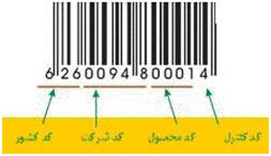
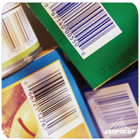
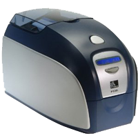
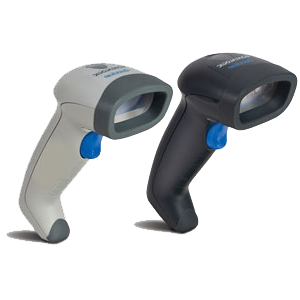
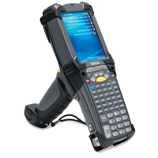

لینک های کمکی
1- بارکد چیست؟2- تاریخچه بارکد
3- موارد استفاده از بارکد
4- سختافزارهای تخصصی بارکد
5- توجیه اقتصادی پروژه های بارکدی
بارکد چیست؟
با توجه به افزایش روز افزون شرکتهای تولیدی و تنوع محصولات ، استفاده از بارکد جهت صادرات و ردیابی فرآیندهای تولید به یکی از ملزومات مبدل گشته است ،با استفاده از این تکنولوژی می توان سریالی اختصاصی جهت متمایز نمودن کالاها از یکدیگر اختصاص داد. استانداردهای مختلفی به منظور تولید و استفاده از بارکد وجود دارد ، که معتبرترین آنها استاندارد EAN/UCC می باشد که 90 درصد تجارت جهانی را پوشش می دهد. در ایران نیز بنا به توسعه صادرات کالاهای غیر نفتی به بازار جهانی در سال 1374 سازمانی با عنوان (مرکز ملی شماره گذاری کالا و خدمات ) زیر نظر موسسه مطالعات و پژوهشهای بازرگانی تاسیس گردید ، سپس کشور ما به عضویت موسسه بین المللی EAN International درآمد و شایان ذکر است که شرکت زبراسیا نیز در سال 1385 به عنوان سرگروه شرکت های فعال در زمینه ارائه تجهیزات و خدمات مبتنی بر بارکد و همکار منتخب آن سازمان معرفی گردیده است.اغلب بارکدهای استفاده شده در کشورهای مختلف 12 یا 13 رقمی می باشند، که از این استانداردهای بارکد جهت صادرات و اطلاعات آن سازمان می باشد که به شرح ذیل می باشد:
بطور خلاصه می توان گفت بارکد تشکیل گردیده است از مجموعه ای از اعداد و خطوط موازی سیاه رنگ با ضخامتهای مختلف که به صورت استاندارد باید در زمینه سفید چاپ نمود که بتوان توسط دستگاههای اسکنر قابل انتقال به رایانه باشند. بارکدهای مورد استفاده جهت ردیابی ، کنترل محصول و مدیریت انبار تفاوتهائی با استاندارد فوق دارند و این بارکدها فقط برای آن سازمان معنی پیدا می کنند که حاوی اطلاعاتی از قبیل نام کالا ، کد کالا ، قطعات تشکیل دهنده ، نام سازنده مربوط به هر قطعه ، نام اپراتورها ، شماره خط تولید و از این قبیل مشخصه¬ها می باشند. بطور خلاصه این بارکد را می توان بعنوان شناسنامه هر محصول دانست . یعنی اگر 100 نوع کالا از یک نوع موجود باشد 100 سریال منحصر بفرد برای هر محصول معرفی می گردد و هر سریال حاوی اطلاعات کامل همان کالا می باشد.
تاریخچه بارکد
 ايده بارکد بوسيله Norman Joseph Woodland و Bernard Silver بوجود آمد . در سال 1948 آنها از دانشگاه Drexel فارغ التحصيل شدند. آنها بعد از شنيدن اينکه رئيس يک شرکت فروش مواد غذايي مي خواست روال پرداخت قيمت کالا را خودکار کند اين ايده را خلق کردند. يکي از اولين طرحهاي آنها اين بود که از رمز مورس که چاپ شده و به صورت عمودي دراز شده است استفاده کنند . که بصورت نوارهاي باريک و پهن نشان داده مي شود . بعدا آنها به استفاده از بارکد از نوع دايره هاي هم مرکز (bulls-eye) معطوف شدند. آن دو در 20 اکتبر 1949 اختراعشان را با عنوان "Classifying Apparatus & Method" در اختراعات آمريکا به شماره 2,612,994به ثبت رساندند. اختراع در 7 اکتبر 1952 منتشر شد.اولين بارکد خوان توسط Woodland ( آن موقع کارمند IBM بود ) و Silver در سال1952 ساخته شد و شامل يک لامپ 500 واتي و يک لوله خلا تشديد کننده نور بود که توسط شرکت RCA براي موسيقي فيلم ساخته شده بود (به صورت نور روي فيلم نوشته مي شد ) دستگاه خيلي قابل استفاده نبود ( دستگاه به سادگي يک نوسان نما بود ، و لامپ 500 وات تقريبا کاغذ اولين نمونه بارکد را سوزاند ) و براي مصرف توليد نشد . در 1962 آنها اختراع را به شرکت Philco فروختند ، که بعدا آن را به شرکت RCA فروخت . پيشرفت ليزر ممکن ساخت که بارکد خوان ها خيلي ارزانتر ساخته شوند ، و پيشرفت مدارات مجتمع ( IC ) رمزگشايي بارکد خوانده شده را ممکن ساخت . متاسفانه Silver در 1963 در سن 38 سالگي درگذشت قبل از اينکه چيزي از اختراع حاصل شود. در 1972 يک فروشگاه Kroger در شهر Cincinnati با استفاده از يک بارکدخوان از نوع دايره هاي هم مرکز (bull-eye) با کمک شرکت RCA آزمايشي را انجام داد . متاسفانه بارکد هاي دايره هاي هم مرکز به آساني هنگام چاپ کثيف مي شدند و خيلي موفق نبودند . در اين مدت Woodland در IBM بارکد خطي را به وجود مي آورد که در 3 آوريل 1973 به عنوان کد محصول جهاني (Universal Product Code) انتخاب شد .
در 26 ژوئن 1974 ،در سوپرمارکت Marsh در ايالت Ohio شهر Troy اولين محصول فروشگاه ( يک بسته آدامس ) بوسيله يک دستگاه بارکد خوان فروخته شد ( اين بسته آدامس حالا در موزه Smithsonian تاريخ آمريکا موجود است ) درسال 1992 مدال ملي تکنولوژي توسط رئيس جمهور George H. W. Bush به Woodland اهدا شد.
منبع :encyclopedia Wikipedia
موارد استفاده از بارکد
بکارگیری بارکد در مدیریت انبارها:
استفاده از بارکد جهت مدیریت و کنترل گردش کالا در انبارها میتواند مزایای زیر را در بر داشته باشد: ثبت ورودها و خروج ها (اسناد رسید و حواله انبار) به صورت غیر دستی
سرعت و دقت بالا در جمع آوری و ورود اطلاعات مربوط به گردش کالا در انبار
امکان اختصاص یک کدسریالی برای هر واحد از کالا
کنترل گردش و موجودی انبار براساس کد - لات و سریال
ایجاد امکان ردیابی هر کالا بر اساس شماره سریال
به حداقل رساندن خطاهای عملیاتی و اطلاعاتی
امکان دسترسی به کلیه اطلاعات کالا به صورت On-Line، بدون خطا و با سرعت بالا
امکان تهیه برگه های خروجی کالا به صورت اتوماتیک و سریع
امکان بهره گیری دقیق از روشهای FIFO و LIFO در نحوه ترخیص محصولات از انبار
انبار گردانی بسیار سریع و آسان با استفاده از دستگاه پرتابل
امکان تعریف شرایط جایگذاری کالاهای خاص در موقعیت های خاص انبار
بکارگیری بارکد در جمع آوری اطلاعات تولید:
استفاده از بارکد در خطوط تولید، باعث به وجود آمدن سیستم اطلاعاتی لحظهای و اطلاعات آماری مفیدی میشود که از آنها در بهبود و کنترل عملیات خط تولید استفاده میشود. بهطور مختصر میتوان مزایای ذیل را در این ارتباط نام برد: تعیین آمار تولید هر قسمت
اطلاع از موجودی در حین تولید
ثبت دقیق زمان و افراد مؤثر در انجام کارها
زمانسنجی اتوماتیک کارها
براورد دقیقتر میزان بهرهوری به منظور کمک به نظام بهرهوری و پاداش
کاهش میزان خطاها و به دنبال آن کاهش ضایعات
تعیین مقدار تولید لحظهای و براورد استفاده از منابع
آگاهی از زمانهای دقیق و عملیات انجام شده در هر نوبت کاری
آگاهی از زیر عملیات انجام شده
انتقال سریع و لحظهای اطلاعات بین قسمتهای مختلف تولید
شناسایی قطعات و عملیات انجام شده بر روی آنها، در طول فرایند تولید
کمک به بالانس خط تولید
ردیابی محصول
اطلاع از میزان پیشرفت کارها بر روی محصول نهایی
بکارگیری بارکد در ردیابی محصول:
با استفاده از بارکد امکان ردیابی محصول فراهم آمده و کنترل کیفیت محصول و امکان پیگیری نقصان کیفی راحتتر میشود. شماری از مزایای استفاده از بارکد برای ردیابی محصول عبارتند از: امکان ردیابی محصول از لحاظ مواد و قطعات تشکیل دهنده آن (مانند بچهای تولیدی)
امکان ردیابی محصول از لحاظ عملیات انجام شده بر روی آن (مانند عملیات کنترل کیفی)
امکان ردیابی محصول از لحاظ افراد مؤثر در تولید یا جابجایی آنها (مانند پرسنل تولید)
امکان ردیابی محصول از لحاظ زمانهای انجام کار بر روی آن (مانند تاریخ مونتاژ قطعات)
امکان ردیابی خواص مشترک بین محصولات مختلف (مانند تشخیص خرابی یک دسته تولیدی از طریق شکایت یک مشتری)
امکان کنترل سیستمهای حمل و نقل (مانند کامیونها و رانندگانی که کالا را تحویل گرفتهاند)
پیشگیری از ارسال اشتباه کالاها (به لحاظ کنترلهای بیشتر در زمان بارگیری)
سختافزارهای تخصصی بارکد
سخت افزارهای تخصصی مورد عرضه زبراسیا در حوزه بارکد بشرح زیر می باشد:
چاپگرهای بارکد و برچسب (Barcode/Label Printers)
 بارکد/لیبل پرینترها، چاپگرهایی هستند که با استفاده از مکانیزه چاپ حرارتی در دو روش حرارت مستقیم و حرارت انتقالی عملیات ایجاد یا چاپ بارکد مورد نیاز بر روی انواع مختلف برچسب را با سرعت و وضوح مناسب برای قرائت آسان بارکد توسط اسکنرهای متداول در جهان انجام می دهند. این چاپگرهای عموما براساس تنوع کاربری در مدلهای رومیزی، تجاری، صنعتی، قابل حمل، RF/ID و کاربردهای خاص، ارائه می گردد که هریک از این مدلها مشخصات و نوانائی های متفاوتی را در اختیار کاربران قرار می دهد. از مزایای عمده استفاده از لیبل پرینترها می توان به سرعت چاپ بالا، توانایی چاپ بر روی جنس های مختلف، استفاده از متغیرها در لیبل، طراحی دلخواه برچسب، نحوه ارتباط به کامپیوتر و شبکه های سیمی یا بی سیم، کاربری آسان، عمر مفید مناسب نسبت به هر کارایی و ... اشاره نمود
بارکدخوانها (Barcode Scanners)
اسکنرهای بارکد تجهیزات ورود الکترونیکی اطلاعات به سیستم های کامپیوتری هستند که با استفاده از یک پویشگر لیزری یا مادون قرمز (CCD) خطوط سیاه و سفید بارکد را تشخیص داده، آنرا به اعداد و حروف قابل تشخیص نرم افزارهای کامپیوتری تبدیل و به آن منتقل می کنند. این اسکنرها عموما بر اساس نحوه ارتباطشان با کامپیوتر و نوع منبع نوریشان دسته بندی می شوند که از انواع مدل های متداول میتوان به مدل های تفنگی لیزری، تفنگی CCD یا Dual CCD، ثابت چند پرتوه، قابل حمل بی سیم، قابل حمل حافطه دار و ... اشاره نمود.
رایانههای قابل حمل (Mobile Computers)
دیتا کالکتورها در واقع کامپیوترهای قابل حمل با مشخصات فیزیکی بسیار مناسبی هستند که ضمن برخورداری از امکانات یک کامپیوتر کامل، از یک اسکنر بارکد نیز سود می جویند. این دستگاه ها به لحاظ امکانات سخت افزاری و نرم افزاری بسیار مناسب، برای جمع آوری پرتابل داده ها و انتقال آنها به سیستم های اطلاعاتی کاملا ایده آل بوده، کارایی چشم گیری در پروژه های مربوطه در اختیار کاربران قرار می دهند. این پایانه های قابل حمل با داشتن امکانات شبکه Wireless و حافظه جانبی قابل توسعه، قابلیت استفاده در روش On-Line ویا Off-Line را بصورت کاربری و عملی برای سازمان ها فراهم نموده اند. درضمن به لحاظ برخورداری از سیستم عامل Windows نسخه CE امکانات طراحی و توسعه نرم افزارهای خاص مورد نیاز مشتریان نیز برای کاربردهای مختلف جهت جمع آوری و انتقال داده ها فراهم آمده است.توجیه اقتصادی پروژه های بارکدی
کاهش هزینه:
بواسطه پیاده سازی سیستم های بارکدی در یک بازه زمانی اثر بخش، با کاهش قابل ملاحظه ای از هزینه های پنهان سازمان روبرو خواهید گشت که بالطبع این هزینه ها چندین برابر کل مبلغ سرمایه گزاری شده می باشد. ذیلاً به پاره ای از موارد اشاره شده است:1 -کاهش قابل ملاحظه هزینه به لحاظ حذف مستندات کاغذی و بایگانی آنها و نوشت افزار مکمل آن.
2 -کاهش پرسنل که از جمله بزرگترین قابلیت های به کارگیری این سیستم ها می باشد زیرا سیستم به تنهایی بسیاری از مسئولیتهای فردی را بر عهده خواهد گرفت.
3 -استفاده از سیستم مکانیزه مبتنی بر بارکد بطور قابل ملاحظه ای هزینه های طبقه بندی حمل را نیز کاهش خواهد داد.
کاهش خطا:
میدانیم که بروز خطا در عملیات، عامل هزینه های بسیاری است که به سازمانها تحمیل می گردد. بخش عمده ای از خطا ها به موجب اشتباهات انسانی پدیدار می گردند که اجتناب ناپذیر بوده و در سطح کلان یک اشتباه فردی کوچک میتواند اشتباهات پیچیده تری را خلق کرده که خود باعث افزایش هزینه خواهد گشت. ذیلاً به پاره ای از نکاتی که سبب کاهش خطا در سازمان میگردند اشاره میشود:1 -ثبت داده ها به صورت مکانیزه با استفاده از بارکد سبب از بین رفتن کلیه خطاهای عملیاتی و اطلاعاتی میگردد با توجه به اینکه نرخ متوسط خطا، هنگامیکه داده ها با دست وارد می شوند یک کاراکتر در هر سیصد فشار روی دکمه های صفحه کلید کامپیوتر خواهد بود در حالیکه متوسط این خطا هنگامیکه داده ها بر اساس فن آوری بارکد خوانده می شوند یک کاراکتر در هر میلیون خواهد بود.
2 -استفاده از سیستم مکانیزه مبتنی بر بارکد حدس و گمان غیر واقعی را در رابطه با مواد و قطعات خط تولید کاهش خواهد داد و زمان تحویل سفارش به مشتریان را (بدون حدس و گمان) قطعی خواهد نمود و بدقولی را به حداقل کاهش خواهد داد.
3 -سیستم جمع آوری اطلاعات بوسیله بارکد امکان پردازشهای مکرر را بوجود آورده و هر تردیدی در مورد پردازش ها و دیگر اطلاعات عرضه کنندگان و مشتریان در کوتاهترین زمان حتی به صورت تلفنی قابل رفع خواهد بود.
همچنین با استفاده از این سیستم شما میتوانید آمار دقیقی از انبار مواد اولیه و یا انبار محصول خود داشته باشید تا دچار کسری مواد اولیه ویا مازاد بر تولید یک محصول در انبار نشوید.